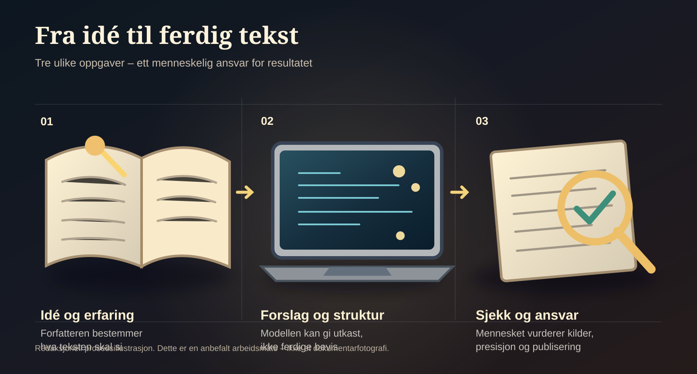

Når maskinene lærer å skrive, mister de lærde sitt monopol
Skriving er å sette sammen ideer, kilder og erfaringer til mening. Kunstig intelligens gjør denne evnen tilgjengelig for langt flere.
Det er noe underlig ved den moralske panikken som har oppstått rundt forfattere som bruker kunstig intelligens. Forfattere blir gransket, tekster kjøres gjennom detektorprogrammer, og det antydes at selve skrivekunsten er truet dersom et menneske har fått hjelp av en maskin til å formulere tankene sine.
Bakgrunn: Aftenpostens kommentar om KI-detektoren og Jørn Lier Horst, 6. november 2026. Dette avsnittets karakteristikk av debatten er forfatterens vurdering.
Men hva er det egentlig vi driver med når vi skriver?
Vi setter ord sammen. Vi organiserer informasjon, bygger forbindelser mellom ideer, sammenfatter kunnskap og forsøker å skape mening. Skriving er i stor grad en syntese av det vi vet, det vi har erfart, det vi har lest, og det vi ønsker å fortelle.
Og akkurat dette er kunstig intelligens blitt et usedvanlig godt hjelpemiddel til.
En språkmodell kan samle informasjon, sammenligne perspektiver, foreslå sammenhenger, strukturere argumenter og formulere vanskelige tanker i forståelig språk. Den kan hjelpe et menneske å komme fra en vag idé til en gjennomarbeidet analyse. Den kan gjøre kunnskap tilgjengelig for mennesker som verken har universitetsutdannelse, et stort privat bibliotek eller årevis med trening i akademisk språk.
Utforsk hvordan KI kan brukes i skrivearbeidet
Dette er et redaksjonelt eksempel på arbeidsflyt, ikke dokumentasjon om en konkret forfatter. Velg et steg.
Prinsipp: Dette er Paradisavisas anbefalte metode for KI-assistert tekst, ikke en påstand om at alle forfattere arbeider slik.
Dette er ikke bare en forbedring av tekstbehandling. Det er en revolusjon i tilgangen til intellektuelt arbeid.
Likevel møter vi en bemerkelsesverdig motstand, særlig fra deler av den etablerte litterære offentligheten.
I Morgenbladet har kulturredaktør Bernhard Ellefsen skrevet kritisk om generativ KI. Forfatteren Maria Kjos Fonn har i en omtale hos Samtiden fortalt at hun reagerte på en KI-generert novelle med bekymring for karrieren – uttrykt med glimt i øyet. Diskusjonen fikk ny kraft da Aftenposten brukte en KI-detektor på bøker av Jørn Lier Horst. Anne Holt kritiserte ham i VG, mens Horst selv svarte at han bruker KI som støtteverktøy, men skriver bøkene sine selv.
Kilder: Ellefsens kommentar, 5. juni; Samtiden om Kjos Fonn, 20. mars 2025; Aftenposten, 6. november; Horsts tilsvar, 7. november; Holts innlegg, 9. november. Utsagnene representerer ulike posisjoner i debatten.
Et slikt detektorutslag er ikke et sikkert mål på hvem som har formet historien, argumentene eller den ferdige teksten. Aftenposten omtaler en verktøyvurdering av språklige mønstre; Horst bestrider at den rettferdiggjør påstander om maskinskrevet forfatterskap. Forskning på flere KI-detektorer har vist betydelige feilkilder. Det betyr ikke at forskningen i seg selv evaluerer akkurat det verktøyet Aftenposten brukte.
Dokumentasjon: Aftenpostens kommentar om resultatene, Horsts eget tilsvar og Weber-Wulff mfl. (2023), studie av KI-tekstdetektorer. Forskningsresultatet gjelder testede verktøy og skal ikke uten videre overføres til Skrivera.
Hva kan – og kan ikke – en KI-detektor fortelle?
Et detektorprogram vurderer tekstlige trekk opp mot det modellen er trent eller konfigurert til å kjenne igjen. Et høyt utslag er ikke et bevis for at en bestemt andel av bokens skapende arbeid er gjort av en maskin.
- Kan: peke på tekst som fortjener videre undersøkelse.
- Kan ikke alene: fastslå hvem som utviklet historien, hvilke redigeringer som ble gjort, eller hvor mye arbeid en forfatter la ned.
- Krever: metodeinnsyn, kjente feilmarginer, kontekst og forfatterens forklaring før bastante konklusjoner.
Se forskningsgjennomgangen av flere detektorer og Aftenpostens konkrete omtale. Forskningen er ikke en direkte test av Skrivera.
Det er naturligvis legitimt å diskutere hva en forfatter skal gjøre selv, hvordan bøker blir til, og hvilke forventninger leserne skal kunne ha. Men når spørsmålet om kvalitet overskygges av spørsmålet om hvilke hjelpemidler forfatteren har benyttet, er debatten på ville veier.
Ingen ville kreve at en samfunnsøkonom sluttet å bruke regneark for å bevise at vedkommende virkelig kunne regne. Vi ber ikke arkitekter om å legge bort tegneprogrammene, eller forskere om å gjøre alle beregningene for hånd.
Å hevde at kunstig intelligens ikke hører hjemme i skriveprosessen, kan sammenlignes med å nekte universitetsstudenter å bruke kalkulator. Man forveksler redskapet med den intellektuelle prestasjonen.
Selvfølgelig skal en student forstå matematikken og en forfatter forstå sitt eget resonnement. Men hensikten med kunnskap kan ikke være å gjøre arbeidet mest mulig tungvint. Hensikten må være å komme frem til bedre innsikt.
Det viktigste ved en tekst er ikke hvor mange timer forfatteren har sittet alene og lett etter ordene. Det viktigste er hva teksten forteller, hvor godt den er begrunnet, og om den gir leseren større forståelse.
Her ligger også en mulig forklaring på den voldsomme motstanden. I generasjoner har en relativt liten gruppe akademikere, kommentatorer, forfattere og andre profesjonelle skribenter hatt et betydelig fortrinn i å produsere avanserte analyser og gjøre dem tilgjengelige for offentligheten.
De behersker språket, fagtradisjonene og referansene. De vet hvordan man bygger en argumentasjonsrekke, setter et fenomen inn i historisk sammenheng og skriver med autoritet.
Med kunstig intelligens blir mye av denne kompetansen tilgjengelig for langt flere.
En håndverker kan utvikle en gjennomarbeidet analyse av boligpolitikken. En butikkmedarbeider kan undersøke økonomiske maktforhold og skrive et godt debattinnlegg. En pensjonist kan sammenligne historiske kilder og utvikle et resonnement som tidligere ville krevd omfattende akademisk hjelp.
Det betyr ikke at alle analyser automatisk blir gode. En språkmodell kan ta feil, finne på kilder og formulere overbevisende tull. Det stiller større krav til kildekritikk, etterprøving og selvstendig dømmekraft, ikke mindre.
Faglig bakgrunn: UNESCO-nettstedet, «AI and the great linguistic flattening» (2025) beskriver risiko for standardisert språk og feilaktig generert innhold. Teksten er en signert fagkommentar, ikke en egen test av denne artikkelen.
Og det finnes reelle spørsmål om opphavsrett, betaling til forfattere og hvordan teknologiselskapene har skaffet seg materialet modellene er trent på. Disse problemene må løses. Men de er ikke argumenter for å avvise teknologien som skriveverktøy.
Det avgjørende skillet går ikke mellom en tekst skrevet med eller uten KI. Det går mellom en tekst som er undersøkt, forstått og kvalitetssikret, og en tekst som ikke er det.


Mennesket må fortsatt ta ansvar for påstandene. Mennesket må velge perspektiv, vurdere kildene og bestemme hva som er verdt å si. Men det finnes ingen god grunn til at mennesket skal måtte utføre hvert eneste mellomliggende språkarbeid alene.
Vi bør dessuten spørre hvem som tjener på at komplisert kunnskap forblir komplisert.
Et samfunn trenger fagfolk som forstår detaljene. Men det trenger ikke en offentlighet hvor bare fagfolk er i stand til å diskutere konklusjonene. Når ny teknologi gjør det mulig å oversette spesialisert kunnskap til et klart og alminnelig språk, er det en demokratisk mulighet.
Kanskje er det ikke først og fremst litteraturen som trues. Kanskje trues forestillingen om at evnen til å formulere avanserte tanker er en eksklusiv egenskap som gir en liten gruppe rett til å definere hva som teller som innsikt.
Kunstig intelligens gjør ikke menneskelig tenkning overflødig. Den kan gi menneskelig tenkning større rekkevidde.
Den gode forfatteren blir ikke mindre interessant fordi flere kan skrive. Den gode forskeren mister ikke sin kunnskap fordi flere kan forstå den. Men begge må i større grad overbevise gjennom innholdet i det de sier, og ikke bare gjennom autoriteten som følger med deres stilling og utdannelse.
Det er en utvikling vi burde ønske velkommen.
Hva bør vi forvente av forfattere som bruker KI?
En frivillig refleksjonsavstemning. Svaret lagres bare i din nettleser. Ingen samlede stemmetall registreres eller vises, og spørsmålet er ikke en representativ meningsmåling.
Avstemningen trenger JavaScript for å vise ditt lokale svar.
Du valgte:
Dette er bare ditt eget svar. Paradisavisa samler ikke inn felles resultater gjennom denne modulen.
Vi trenger ikke færre mennesker som skriver, analyserer og deltar i samfunnsdebatten. Vi trenger flere.
Og hvis kunstig intelligens gjør det mulig, bør vi slutte å behandle det som en skandale hver gang noen tar verktøyet i bruk.
Bakgrunn, tilsvar og forskning
- Morgenbladet: Bernhard Ellefsens kommentar om KI, 5. juni 2026
- Samtiden: Maria Kjos Fonn om KI og kreativ skriving, 20. mars 2025
- Aftenposten: Ingunn Øklands kommentar om Horst og KI-detektoren, 6. november 2026
- Aftenposten: Jørn Lier Horsts eget tilsvar, 7. november 2026
- VG: Anne Holts innlegg om KI og forfatterskap, 9. november 2026
- Weber-Wulff mfl.: «Testing of Detection Tools for AI-Generated Text» (2023)
- Liang mfl.: «GPT detectors are biased against non-native English writers» (2023)
- UNESCO: «AI and the great linguistic flattening» (signert fagkommentar, 2025)
Dette er et debattinnlegg skrevet fra Paradispartiets perspektiv. Påstanden om at deler av den etablerte offentligheten forsvarer et «kunnskapsmonopol», er forfatterens tolkning, ikke et dokumentert personlig motiv hos Ellefsen, Kjos Fonn, Holt eller andre navngitte personer. Kildene dokumenterer deres uttalelser og relevante faglige forhold – ikke nødvendigvis tolkningen vår. Et KI-detektorutslag beviser heller ikke alene KI-forfatterskap.